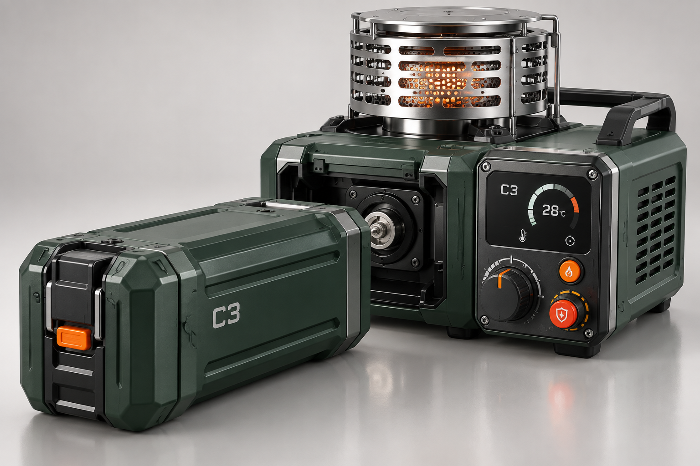

C3 · 一体式 / 概念产品
向下探索从一滴废油开始
燃料不必被高压困住。
火力，也不必以笨重为代价。
Bioflame 将废弃食用油转化为生物甲酯燃料，再用专用雾化、配风与控制系统稳定输出热量。 一个平台，逐步覆盖轻量出行、营地烹饪与即插即用三种体验。
一个平台，三步进化
C1 · SMALL STOVE
轻装，也能看见火力。
紧凑炉体搭配 250 ml 燃料瓶，面向单人徒步、摩旅与应急加热。
- 目标热功率
- 1–1.5 kW
- 燃料形态
- 250 ml 小包装
- 核心安全
- 倾倒断油
C2 · SPLIT SYSTEM
把补给，变成可重复的一次连接。
标准瓶、快接软管与分体炉头，为 2–4 人营地和自驾场景提供稳定可调的火力。
- 目标热功率
- 2–3 kW
- 燃料形态
- 500 ml / 1 L
- 核心体验
- 快接 · 可续 · 可灌
C3 · INTEGRATED
装入燃料盒。剩下的，交给一键点火。
燃料仓、控制与炉具整合为一体，面向家庭自驾、家庭应急与营地运营。
- 目标热功率
- 3–4 kW
- 燃料形态
- 专用即插燃料盒
- 核心安全
- 儿童锁 · 温升联锁
安装。连接。点火。
动作简单到，无需多想。
三种形态，共享清晰的使用逻辑。选择产品，查看完整的线性安装与点火演示。
线性动作演示
安全，写进结构里
不是更小的气罐。
是一条不同的燃料路径。
常温常压储存
液体燃料不依赖承压容器，为车辆后备箱、营地与家庭应急场景减少压力储存顾虑。
可见火焰
相比强光下难以观察的酒精火焰，更容易确认燃烧状态。
主动切断
从倾倒断油到温升联锁，让熄火不是一句提醒，而是一套控制逻辑。
从废油回到能源
以废弃食用油为原料，围绕燃料、包装与回收体系建立可持续的闭环。